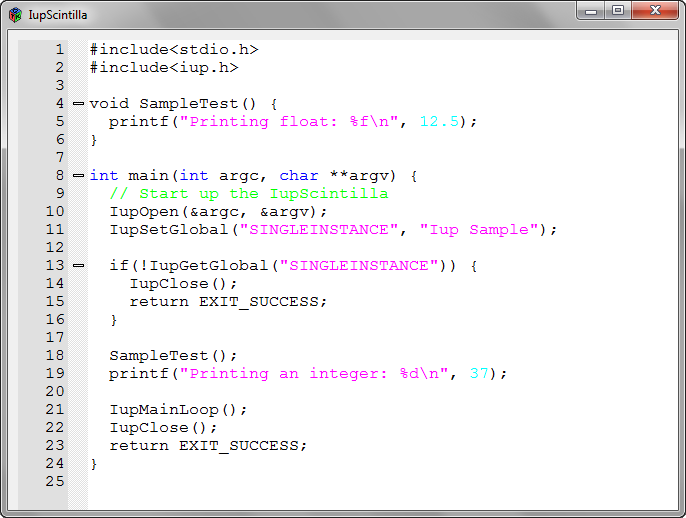
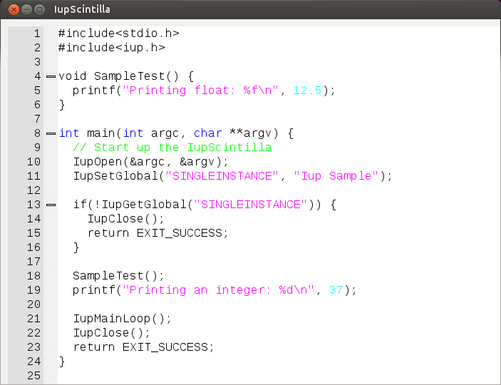

Creates a Scintilla text editing component.
Scintilla is a free library that provides text-editing functions, with an emphasis on advanced features for source code editing. It comes with complete source code and a license that permits use in any free project or commercial product, and it is available on http://www.scintilla.org/. IupScintilla library includes the Scintilla source code, so no external references are needed. Supported by Windows and GTK drivers only.
The IupScintillaOpen function must be called after a IupOpen, so that the control can be used. The "iup_scintilla.h" file must also be included in the source code. In Windows, the program must be linked to the controls library (iup_scintilla) and the Input Method Manager API (imm32). In GTK, the program must be linked to the controls library (GTK2 = iup_scintillagtk; GTK3 = iup_scintillagtk3).
Ihandle* IupScintilla(void); [in C]
iup.scintilla{} -> (elem: ihandle) [in Lua]
scintilla(action) [in LED]
This function returns the identifier of the created editing component, or NULL if an error occurs.
APPEND (non inheritable, write-only): Inserts a text at the end of the current text. If APPENDNEWLINE=YES, a "\n" character will be automatically inserted before the appended text if the current text is not empty (APPENDNEWLINE default is YES).
BGCOLOR: Background color of the text. Default: the global attribute TXTBGCOLOR.
BORDER (creation only): Shows a border around the text. Default: "YES".
CANFOCUS (creation only) (non inheritable): enables the focus traversal of the control. In Windows the control will still get the focus when clicked. Default: YES (since 3.0).
CARET (non inheritable): Position of the insertion point. The first position, lin or col, is "0". It uses a string format "lin,col" in order to indicate the caret position, where lin and col must be integer numbers.
When lin is greater than the number of lines, the caret is placed at the last line. When col is greater than the number of characters in the given line, the caret is placed after the last character of the line.
If the caret is not visible the text is scrolled to make it visible.
CARETPOS (non inheritable): Position of the insertion point using a zero based character unique index "pos". Useful for indexing the VALUE string. This removes any selection, sets the caret at pos and scrolls the view to make the caret visible, if necessary.
CHARATpos (non inheritable, read-only): returns the character considering the position "pos".
CLEARALL (non inheritable, write-only): deletes all the text (unless the document is read-only).
CLEARDOCUMENTSTYLE (non inheritable, write-only): clear all styling information and reset the folding state.
CLIPBOARD (non inheritable, write-only): clear, cut, copy or paste the selection to or from the clipboard. Values: "CLEAR", "CUT", "COPY", "PASTE", "UNDO", and "REDO".
COUNT (non inheritable, read-only): returns the number of characters in the text.
DELETERANGE (non inheritable, write-only): Deletes a range of text in the document. It uses a string format "pos:len" in order to indicate the start position and text length to delete.
DROPFILESTARGET [Windows and GTK Only] (non inheritable): Enable or disable the drop of files. Default: NO, but if DROPFILES_CB is defined when the element is mapped then it will be automatically enabled (since 3.0).
FGCOLOR: Text color. Default: the global attribute TXTFGCOLOR.
FOLDFLAGS (non inheritable, write-only): determines how folding lines are drawn. Can be: "LEVELNUMBERS", "LINEBEFORE_EXPANDED", "LINEBEFORE_CONTRACTED", "LINEAFTER_EXPANDED" or "LINEAFTER_CONTRACTED " (default).
FOLDLEVELid (non inheritable): sets and gets the fold level of a "id" line. Can be: "WHITEFLAG", "HEADERFLAG", "NUMBERMASK" or "BASE" (default). If you use a lexer, it is not recommend to set the fold level (this is far better handled by the lexer). By contrast, get fold level is useful to decide how to handle user folding requests.
INSERTid (non inheritable, write-only): Inserts a text string at position "id" or at the current position if pos is -1. If the current position is after the insertion point then it is moved along with its surrounding text but no scrolling is performed.
KEYWORDid (non inheritable, write-only): keyword list used by the current lexer. Until 9 lists of keywords can set up using id from 0 to 8. The value is a list of keywords separated by spaces, tabs, "\n" or "\r" or any combination of these.
LEXER (non inheritable): the lexer text code. Can be: CPP, LUA or NONE.
LINEid (non inheritable, read-only): returns the text considering the "id" line number. It does not include the "\n" character. Number lines starts at 0.
LINECOUNT (non inheritable, read-only): returns the number of lines in the text.
LINEVALUE (non inheritable, read-only): returns the text of the line where the caret is. It does not include the "\n" character.
MARGINMASKNid (non inheritable): determines if a margin is folding or non-folding. Can be: MASK_FOLDERS or NO_MASK_FOLDERS.
MARGINSENSITIVENid (non inheritable): determines if a margin is sensitive or not. Margins that are not sensitive act as selection margins which make it easy to select ranges of lines. By default, all margins are insensitive. Can be: YES or NO.
MARGINTYPENid (non inheritable): set and get the type of a margin. The margin argument should be 0, 1, 2, 3 or 4. Each margin can be set to display only symbols, line numbers, or text. You can use the predefined values "MARGIN_SYMBOL", "MARGIN_NUMBER", "MARGIN_TEXT", "MARGIN_RTEXT", "MARGIN_BACK" or "MARGIN_FORE" (the latter two used for symbol margins that set their background or foreground using the style default colors).
MARGINWIDTHNid (non inheritable): width of a margin in pixels (Default value: 16). A margin with zero width is invisible. The margins are numbered 0 to 4. By default, Scintilla margin 0 is set to display line numbers, margin 1 is set to display non-folding symbols, and margin 2 is set to display folding symbols. Margins 3 and 4 are free for user default. However, you can set the margins to be whatever you wish using MARGINTYPENid.
MARKERDEFINE (non inheritable, write-only): Defines the folding marker number and its marker symbol. Format: "markerNumber,markerSymbol". Marker numbers: "FOLDEREND", "FOLDEROPENMID", "FOLDERMIDTAIL", "FOLDERSUB", "FOLDER" and "FOLDEROPEN". Marker symbols: "CIRCLE", "ROUNDRECT", "ARROW", "SMALLRECT", "SHORTARROW", "EMPTY", "ARROWDOWN", "MINUS", "PLUS", "VLINE", "LCORNER", "TCORNER", "BOXPLUS", "BOXPLUSCONNECTED", "BOXMINUS", "BOXMINUSCONNECTED", "LCORNERCURVE", "TCORNERCURVE", "CIRCLEPLUS", "CIRCLEPLUSCONNECTED", "CIRCLEMINUS", "CIRCLEMINUSCONNECTED", "BACKGROUND", "DOTDOTDOT", "ARROWS", "PIXMAP", "FULLRECT", "LEFTRECT", "AVAILABLE", "UNDERLINE", "RGBAIMAGE" and "CHARACTER".
MASK (non inheritable): Defines a mask that will filter interactive text input.
OVERWRITE (non inheritable): turns the overwrite mode ON or OFF. When overwrite is enabled, each typed character replaces the character to the right of the text caret. When overtype is disabled, characters are inserted at the caret.
PREPEND (non inheritable, write-only): Inserts a text at the begin of the current text. If APPENDNEWLINE=YES, a "\n" character will be automatically inserted after the prepended text if the current text is not empty (APPENDNEWLINE default is YES).
PROPERTY (non inheritable): sets and gets lexers using keyword:value string pairs. There is no limit to the number of keyword pairs you can set, other than available memory. Format: "key,val", where key is a case sensitive keyword, value is a string that is associated with the keyword.
READONLY (non inheritable): Allows the user only to read the contents, without changing it. Restricts the insertion using keyboard input and attributes. Navigation keys are still available. Possible values: "YES" and "NO". Default: NO.
SCROLLBAR (creation only): Associates an automatic horizontal and/or vertical scrollbar. Can be: "VERTICAL", "HORIZONTAL", "YES" (both) or "NO" (none). Default: "YES". For all systems, when SCROLLBAR is NO, the natural size will always include its size even if the native system hides the scrollbar.
SCROLLTO (non inheritable, write only): Scroll the text to make the given position visible. It uses the same format and reference of the CARET attribute ("lin,col" or "col" starting at 0).
SCROLLTOPOS (non inheritable, write only): Scroll the text to make the given position visible. It uses the same format and reference of the CARETPOS attribute ("pos" starting at 0).
SELECTEDTEXT (non inheritable): Selection text. Returns NULL if there is no selection. When changed replaces the current selection. Similar to INSERT, but does nothing if there is no selection.
SELECTION (non inheritable): Selection interval. Returns NULL if there is no selection. The first position, lin or col, is "0". The accepted format is represented by the string "lin1,col1:lin2,col2", where lin1, col1, lin2 and col2 are integer numbers corresponding to the selection's interval. col2 correspond to the character after the last selected character. The values ALL and NONE are also accepted.
SELECTIONPOS (non inheritable): Same as SELECTION but using a zero based character index "pos1:pos2". Useful for indexing the VALUE string. The values ALL and NONE are also accepted.
SIZE (non inheritable): Since the contents can be changed by the user, the Natural Size is not affected by the text contents (since 3.0). In IUP 2.x the Natural Size was defined by the number of lines in the text and the with of the largest line. For IUP 3, use VISIBLECOLUMNS and VISIBLELINES to control the Natural Size.
STYLEBGCOLORid (non inheritable): background color for a style (See Style Definition). Values in RGB format ("r g b").
STYLEBOLDid (non inheritable): the boldness of a font (See Style Definition).
STYLECASEid (non inheritable): determines how text is displayed (See Style Definition). Values: LOWERCASE, UPPERCASE or MIXED (default).
STYLECHARSETid (non inheritable): sets and gets a style to use a different character set than the default (See Style Definition). Can be ANSI (default), EASTEUROPE, RUSSIAN, GB2312, HANGUL or SHIFTJIS.
STYLECLEARALLid (non inheritable): sets all styles to have the same attributes as default global style (id = 32) (See Style Definition).
STYLEEOLFILLEDid (non inheritable): If the last character in the line has a style with this attribute set, the remainder of the line up to the right edge of the window is filled with the background colour set for the last character (See Style Definition). Can be YES (italic) or NO.
STYLEFGCOLORid (non inheritable): foreground color for a style (See Style Definition). Values in RGB format ("r g b").
STYLEFONTid (non inheritable): sets and gets the font name (See Style Definition). IupScintilla tracks fonts by name and does care about the casing of font names. On GTK+, Pango is used to display text.
STYLEFONTSIZEid (non inheritable): sets and gets the font size (See Style Definition), using a integer number of points.
STYLEFONTSIZEFRACid (non inheritable): sets and gets the font size (See Style Definition), using a fractional point size in hundredths of a point. For example, a text size of 9.4 points is set with value = 940.
STYLEHOTSPOTid (non inheritable): used to mark ranges of text that can detect mouse clicks (See Style Definition). The cursor changes to a hand over hotspots, and the foreground, and background colours may change and an underline appear to indicate that these areas are sensitive to clicking. This may be used to allow hyperlinks to other documents.
STYLEITALICid (non inheritable): the italicness of a font (See Style Definition). Can be YES (italic) or NO.
STYLERESETid (non inheritable, write-only): Resets to the initial Scintilla style default (See Style Definition).
STYLEUNDERLINEid (non inheritable): determines if the underline is drawn, using a foreground color (See Style Definition). Can be YES (underline) or NO.
STYLEVISIBLEid (non inheritable): determines if the text is visible (YES) or hidden (NO) (See Style Definition).
STYLEWEIGHTid (non inheritable): the weight of a font (See Style Definition). Predefined values: NORMAL, SEMIBOLD and BOLD. The weight can also be a number between 1 and 999 with 1 being very light and 999 very heavy.
TABSIZE (non inheritable): Controls the number of characters for a tab stop. Default: 8.
TOGGLEFOLD (non inheritable, write-only): Determines if the fold point (line number) may be either expanded, displaying all its child lines, or contracted, hiding all the child lines.
VALUE (non inheritable): Text entered by the user. The "\n" character indicates a new line. After the element is mapped and if there is no text will return the empty string "". This replaces all the text in the document with the zero terminated text string you pass in.
VALUEMASKED (non inheritable, write-only): sets VALUE but first checks if it is validated by MASK. If not does nothing (since 3.4).
VISIBLECOLUMNS: Defines the number of visible columns for the Natural Size, this means that will act also as minimum number of visible columns. It uses a wider character size then the one used for the SIZE attribute so strings will fit better without the need of extra columns. As for SIZE you can set to NULL after map to use it as an initial value. Default: 5 (since 3.0).
VISIBLELINES: Defines the number of visible lines for the Natural Size, this means that will act also as minimum number of visible lines. As for SIZE you can set to NULL after map to use it as an initial value. Default: 1 (since 3.0).
WORDWRAP (non inheritable): If enabled will force a word wrap of lines that are greater than the with of the control, and the horizontal scrollbar will be removed. Default: NO.
ACTIVE, FONT, EXPAND, SCREENPOSITION, POSITION, MINSIZE, MAXSIZE, WID, TIP, RASTERSIZE, ZORDER, VISIBLE: also accepted.
Drag & Drop attributes are supported. See Notes bellow.
ACTION: Action generated when the text is edited, but before its value is actually changed. Can be generated when using the keyboard, undo/redo system or from the clipboard.
int function(Ihandle *ih, int c, char *new_value); [in C]
elem:action(c: number, new_value: string) -> (ret: number) [in Lua]
ih:
identifier of the element that activated the
event.
c: valid alpha numeric character or 0.
new_value:
Represents the new text value.
BUTTON_CB: Action generated when any mouse button is pressed or released. Use IupConvertXYToPos to convert (x,y) coordinates in character positioning (since 3.0).
CARET_CB: Action generated when the caret/cursor position is changed.
int function(Ihandle *ih, int lin, int col, int pos); [in C]
elem:caret_cb(lin, col, pos: number) -> (ret: number) [in Lua]
ih:
identifier of the element that activated the
event.
lin, col: line and column number (start at 0).
pos: 0 based character position.
DBLCLICK_CB: Action generated when the user double click in editor.
int function(Ihandle *ih, int modifiers, int line); [in C]
elem:dblclick_cb(modifiers, line: number) -> (ret: number) [in Lua]
ih:
identifier of the element that activated the
event.
modifiers: the key modifiers held down.
line: line in the document that corresponds to the double
click.
DROPFILES_CB: Action generated when one or more files are dropped in the element (since 3.0).
HOTSPOTCLICK_CB: Action generated when the user clicks or double clicks on text that is in a style with the hotspot attribute set.
int function(Ihandle *ih, int modifiers, int line); [in C]
elem:hotspotclick_cb(modifiers, line: number) -> (ret: number) [in Lua]
ih:
identifier of the element that activated the
event.
modifiers: the key modifiers held down.
line: line in the document that corresponds to the hotspot
click.
MARGINCLICK_CB: Action generated when the mouse button is clicked inside a margin that is marked as sensitive.
int function(Ihandle *ih, int margin, int line); [in C]
elem:marginclick_cb(margin, line: number) -> (ret: number) [in Lua]
ih:
identifier of the element that activated the
event.
margin: the margin number that was clicked.
line: line in the document that corresponds to the margin
click.
MOTION_CB: Action generated when the mouse is moved. Use IupConvertXYToPos to convert (x,y) coordinates in character positioning (since 3.0).
VALUECHANGED_CB: Called after the value was interactively changed by the user (since 3.0).
int function(Ihandle *ih); [in C]
elem:valuechanged_cb() -> (ret: number) [in Lua]
ih: identifier of the element that activated the event.
MAP_CB, UNMAP_CB, GETFOCUS_CB, KILLFOCUS_CB, ENTERWINDOW_CB, LEAVEWINDOW_CB, K_ANY, HELP_CB: All common callbacks are supported.
Drag & Drop callbacks are supported. See Notes bellow.
void IupScintillaConvertLinColToPos(Ihandle* ih, int lin, int col, int *pos); [in C]
iup.ScintillaConvertLinColToPos(ih: ihandle, lin, col: number) -> pos: number [in Lua]
Converts a (lin, col) character positioning into an absolute position.
void IupScintillaConvertPosToLinCol(Ihandle* ih, int pos, int *lin, int *col); [in C]
iup.ScintillaConvertPosToLinCol(ih: ihandle, pos: number) -> lin, col: number [in Lua]
Converts an absolute position into a (lin, col) character positioning.
List of predefined numbered styles used to set CPP and LUA text attributes. The "id" number are used in IupScintilla STYLE attributes. Default style is used (id = 0) when the id is not specified in the attribute. Lexer styles can be set from 0 to 255. Invalid IDs are ignored.
| ID | Global styles | |
|---|---|---|
| 32 | This style defines the attributes that all styles receive when the STYLECLEARALL attribute is used. | |
| 33 | This style sets the attributes of the text used to display line numbers in a line number margin. | |
| ID | CPP styles | LUA styles |
| 0 | Default style | Default style |
| 1 | C comment | Lua comment |
| 2 | C++ comment line | Lua comment line |
| 3 | JavaDoc/ Doxygen style C comment | JavaDoc/ Doxygen style Lua comment |
| 4 | Number | Number |
| 5 | Keyword | Keyword |
| 6 | String | String |
| 7 | Character | Character |
| 8 | IDL UUID | Literal string |
| 9 | Preprocessor block | Preprocessor block |
| 10 | Operator | Operator |
| 11 | Identifier | Identifier |
| 12 | End of a line where a string is not closed | End of a line where a string is not closed |
| 13 | C# verbatim string | Keyword set number 2 |
| 14 | Regular expression | Keyword set number 3 |
| 15 | JavaDoc/Doxygen style C++ comment line | Keyword set number 4 |
| 16 | Keyword set number 2 | Keyword set number 5 |
| 17 | JavaDoc/Doxygen keyword | Keyword set number 6 |
| 18 | JavaDoc/Doxygen keyword error | Keyword set number 7 |
| 19 | Global class or typedef defined in keyword | Keyword set number 8 |
| 20 | C++ raw string | Label |
| 21 | F# triple-quoted verbatim strings | |
| 22 | Hash-quoted strings | |
| 23 | Preprocessor block comment | |
Enter key will add a new line, and the Tab key will insert a Tab.
Internal Drag&Drop support is enabled by default.
Here is a list of the common keys for all drivers. Other keys are available depending on the driver.
| Keys | Action |
|---|---|
| Navigation | |
| Arrows | move by individual characters/lines |
| Ctrl+Arrows | move by words/paragraphs |
| Home/End | move to begin/end line |
| Ctrl+Home/End | move to begin/end text |
| PgUp/PgDn | move vertically by pages |
| Ctrl+PgUp/PgDn | move horizontally by pages |
| Selection | |
| Shift+Arrows | select charaters |
| Ctrl+A | select all |
| Deleting | |
| Del | delete the character at right |
| Backspace | delete the character at left |
| Clipboard | |
| Ctrl+C | copy |
| Ctrl+X | cut |
| Ctrl+V | paste |
| Windows 7 |
|---|
|
| Gtk on Windows 7 |
|  |
| Gtk on Ubuntu Linux 12.04 |
|  |